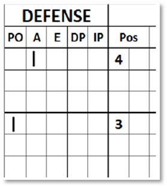
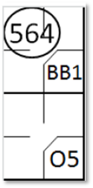
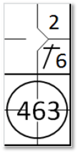
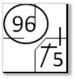
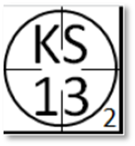

Les assistances.
Une assistance est une statistique attribuée à un joueur défensif dont l'action contribue à l'élimination d'un frappeur-coureur ou d'un coureur.
[OBR9.10].
Une assistance sera créditée à chaque joueur défensif qui:
-
Lance ou dévie une balle frappée ou lancée de manière à provoquer un retrait, ou aurait permis
un retrait sans une erreur ultérieure d'un joueur défensif. Une seule assistance, et pas plus, sera créditée à chaque
joueur défensif qui lance ou dévie la balle lors d'une course-poursuite qui provoque un retrait, ou aurait permis un
retrait sans une erreur ultérieure.
[OBR 9.10(a)(1)];
Commentaire:
Un simple contact inefficace avec la balle ne sera pas considéré comme une assistance.
« Dévier » signifie ralentir ou modifier la trajectoire de la balle et ainsi contribuer efficacement à
l'élimination d'un frappeur ou d'un coureur. Si une élimination résulte d'un appel dans le cours normal du jeu,
le scoreur officiel attribuera une assistance à chaque joueur défensif, à l'exception de celui qui a effectué
l'élimination, dont l'action a conduit à celle-ci. Si une élimination résulte d'un appel initié par le lanceur
qui lance à un joueur défensif après la fin de l'action précédente, le scoreur officiel attribuera une assistance
au lanceur, et à lui seul.
[OBR 9.10(a)(1) Commentaire].
-
Lance ou dévie le balle pendant une action de jeu, ce qui entraîne l'élimination
d'un coureur pour obstruction ou pour sortie de ligne.
[OBR 9.10(a)(2)];
| L'assistance doit être enregistrée par un trait vertical dans la colonne
'A' de la défense, en correspondance avec la position défensive du joueur concerné |

|
Le même joueur de champ peut néanmoins se voir attribuer une assistance et un retrait, ou une assistance
et une erreur.
Ne pas attribuer une assistance à [OBR 9.10(b)(1), (2), (3)]:
-
Le lanceur est retiré sur une prise, sauf s'il récupère une troisième prise non
attrapée et effectue un lancer qui entraîne un retrait;
-
Le lanceur, lorsqu'un coureur est éliminé suite à un lancer légal reçu par le
receveur (par exemple, lorsque le receveur retire un coureur hors des bases, élimine un coureur tentant de
voler une base ou touche un coureur tentant de marquer un point); ou
-
un défenseur dont le lancer erroné permet à un coureur d'avancer, même
si le coureur est ensuite éliminé durant la même phase de jeu
-
Une action qui suit une erreur de jeu (qu'il s'agisse ou non d'une faute) est une
nouvelle action, et le joueur ayant commis l'erreur ne se verra pas attribuer une assistance à moins qu'il
ne participe à la nouvelle action.
Exemple 33:
Avec un coureur en première base, le frappeur frappe une balle au sol vers le défenseur de la troisième base, qui
dévie la balle vers l'arrêt-court, qui l'attrape et la lance au défenseur de la deuxième base à temps pour éliminer le
coureur.
On crédite une assistance aux défenseurs de la troisième base et de l'arrêt-court, et un retrait pour le
défenseur de la deuxième base.
|

|
action {
batter -> BB
}
action {
batter -> O5
,
runner1 -> 564
}
|

|
Exemple 34:
Avec un coureur en première base, le frappeur frappe une balle au sol vers la deuxième base, qui lance vers
l'arrêt-court trop tard pour éliminer le coureur.
L'arrêt-court lance la balle au défenseur de la première base qui élimine le frappeur-coureur.
On crédite une assistance aux défenseurs de la deuxième base et à l'arrêt-court, et un retrait au défenseur
de la première base.
|

|
action {
batter -> 1B6
}
action {
batter -> 463
,
runner1 -> +
}
|

|
Exemple 35:
Avec un coureur en deuxième base, le frappeur frappe une balle au sol vers la troisième base, qui attrape
la balle et la lance en deuxième base, éliminant ainsi le coureur hors de la base.
Cela conduit à une souricière
La balle circule d'un joueur défensif à l'autre (troisième base, deuxième base, receveur, arrêt-court,
troisième base, deuxième base, receveur) jusqu'à ce que l'arrêt-court effectue un retrait. Inscrivez le déroulement
complet sur la feuille de scorage, mais n'accordez qu'une seule assistance au troisième base, deuxième base, à
l'arrêt-court et au receveur, et un retrait à l'arrêt-court.

|
action {
batter -> 2B9
}
action {
batter -> O5
,
runner2 -> 54265426
}
|

|
Exemple 36:
Le frappeur envoie une balle au sol vers le défenseur de la troisième base, qui l'attrape à temps pour l'éliminer
en première base, mais son lancer vers la première base est imprécis.
Le coureur avance vers le deuxième base, mais est retiré par l'arrêt-court, aidé par le défenseur du champ droit
qui a attrapé la balle lancée par le défenseur de la troisième base. On impute une erreur au défenseur de la troisième
base, une assistance au défenseur du champ droit et un retrait à l'arrêt-court.

|
action {
batter -> E5T 96
}
|

|
Exemple 37:
Le frappeur envoie une balle au sol lente vers le défenseur de la troisième base, qui l'attrape trop tard pour
l'éliminer en première base, mais lance quand même, ratant son lancer.
Le coureur poursuit sa route vers la deuxième base, mais est éliminé par l'arrêt-court, grâce à un relais du
défenseur du champ droit qui a attrapé la balle lancée par le défenseur de la troisième base. On attribue une assistance
au défenseur du champ droit et une élimination à l'arrêt-court.
|

|
action {
batter -> 1B5 96
}
|

|
Exemple 38:
Le frappeur est retiré sur trois prises, mais sur le troisième strike, le receveur ne parvient pas à attraper
la balle, qui rebondit contre les barrières de protection derrière lui et revient sur le terrain.
Le lanceur attrape la balle et aide le défenseur de la première base à éliminer le coureur. On attribue une
assistance au lanceur et une élimination au défenseur de la première base.
|

|
action {
batter -> KS13
}
|

|
Exemple 39:
Le frappeur envoie une balle haute et difficile entre la deuxième base et le champ droit. Le défenseur de la
deuxième base recule et, en sautant pour effectuer l'élimination, dévie la balle avec son gant mais ne parvient pas à
l'attraper. Avant que la balle ne touche le sol, le champ droit la rattrape et effectue l'élimination. On attribue une
assistance au défenseur de la deuxième base et une élimination au champ droit.
Ou

|
action {
batter -> F49
}
|

|
Exemple 40:
Le frappeur envoie une balle haute et facile entre la deuxième base et le champ droit. Le défenseur de la deuxième
base tente d'éliminer le coureur, mais dévie simplement la balle avec son gant. Avant que la balle ne touche le sol,
le champ droit la rattrape et effectue l'élimination. On attribue une assistance au défenseur de la deuxième base et
une élimination au champ droit. L'action du deuxième but doit être considérée comme une erreur de jeu, mais n'est pas
comptabilisée comme une faute, puisque l'élimination est effective.

|
action {
batter -> F49
}
|

|
Exemple 41:
Le frappeur frappe une balle facile au sol vers le défenseur de la troisième base, qui la dévie mais ne parvient
pas à l'attraper. Le joueur d'arrêt-court la rattrape et la lance au défenseur de la première base à temps pour
effectuer l'élimination. On attribue une assistance au joueur d'arrêt-court et une élimination au défenseur de la
premère base. Aucune assistance n'est attribuée au défenseur de la cinquième base.

|
action {
batter -> 63
}
|

|